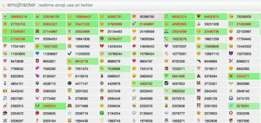
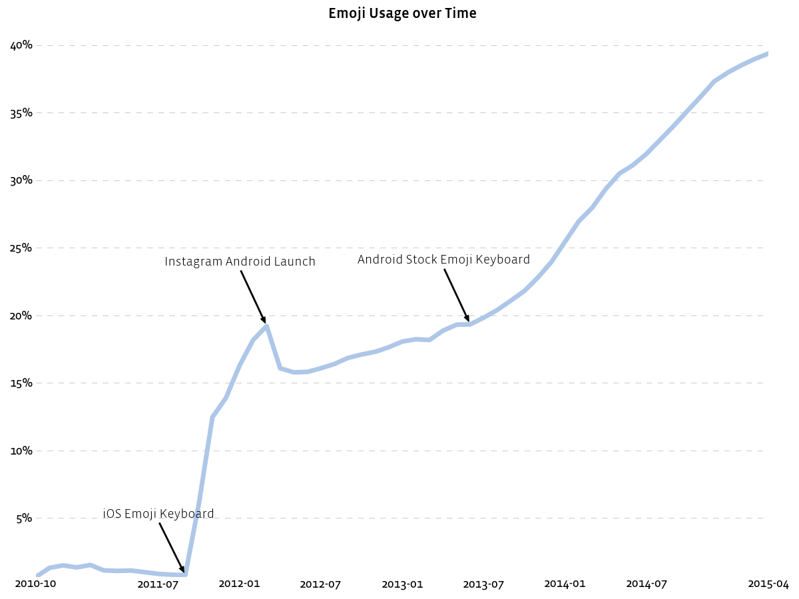
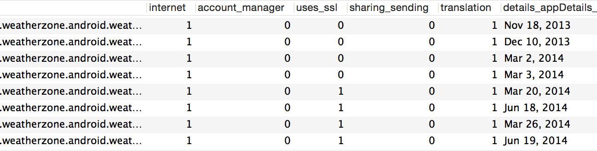
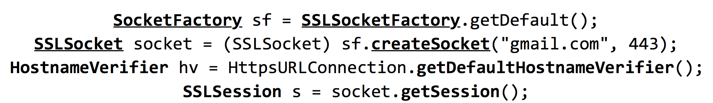
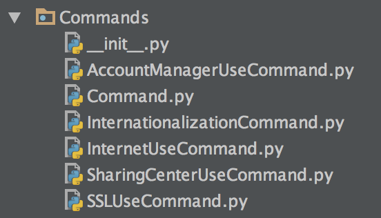
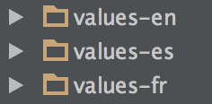
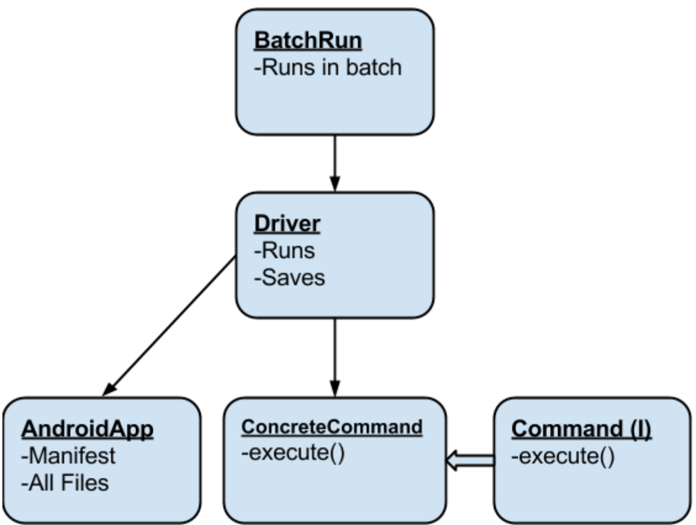

Android Scraper
Gathering features from Android apps
Created by @Kocsen Chung | GitHub Repo
Outline
Introduction
Value
Results
Diving into the code
Challenges
Future work
Objective
To gather app features with our application corpora to analyze change over time.
Gather & Analyze
Gathering
Gathering existing app features.
Analyzing
Some Examples- View trends in apps
- What feature makes an app successful?
- Predict market adoption
- a lot more...
Remember, we have over 100k versions of apps.
Why is it useful?
It's not immediately apparent why this is useful, for some people.
As is the case with heavy data mining.
Lets look at emoji
Live twitter feed
Instagram Emoji Impact
Over 40% of the words in Instagram are Emoji.
So what features are we gathering?
| Section | Feature |
|---|---|
| General | Sharing |
| Internet Use | |
| Internationalization | |
| Security | SSL Use |
| Account Manager | |
Earliest Findings
weather apps

Say, didn't Hearbleed happen around that time?
How does it work?
Walkthrough
- Get App
- Decompile
- Analyze & Save
- Repeat
1. Get App
Already happened by previous research2. Decompile
Phase I
APK
.dex -> .jar
-> .java
unzip
| dex2jar
| procyon decompiler
Unreadable XML -> XML
2. Decompile
continued
There are actually no tools that will do this entire stack.
I'm proud.
Takes ~ 10 minutes/app and up to ∞
10 min * 100k apps = 1 Million minutes
= ~2 years
3. Analyze
Phase IIFinding Key terms within code.
For SSL
Architecture
Command Pattern
Sharing Feature
Looking for:
.setAction(Intent.ACTION_SEND);
Account Manager
Useful for storing passwords
new AccountManager();
.getAccountsByType(String);
.addAccount(...);
Internationalization
Find directories

Ability to discover which languages were used.
SSL Use
See hereArchitecture Diagram
Challenges
Can only test in production
Process was so intensive, the hardware would be limiting
The decompiler world is a dark world
Future Work
Optimizations
Begin data analysis